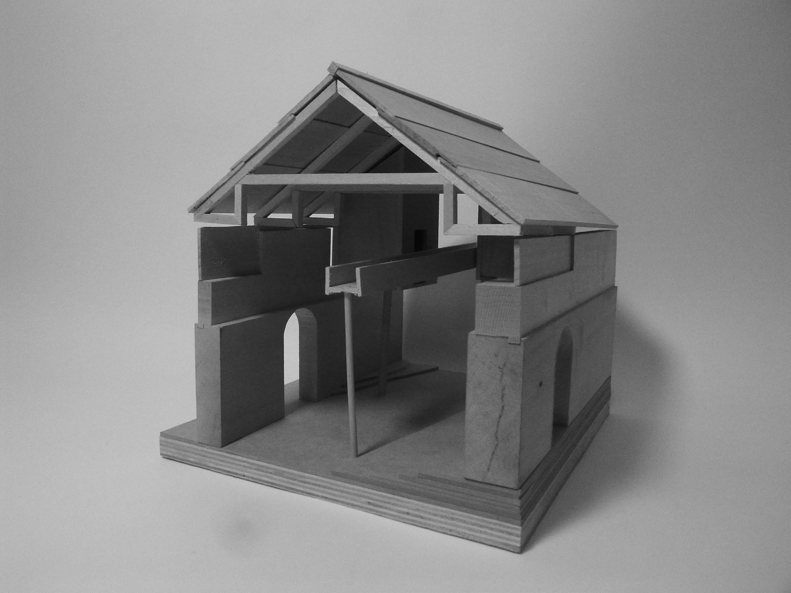
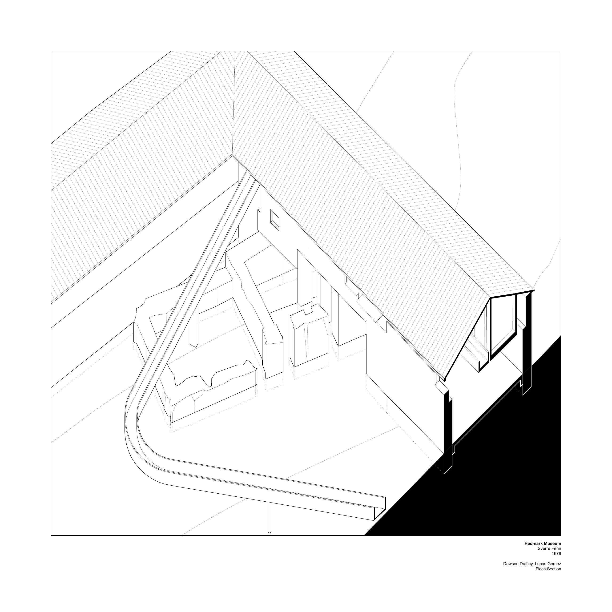
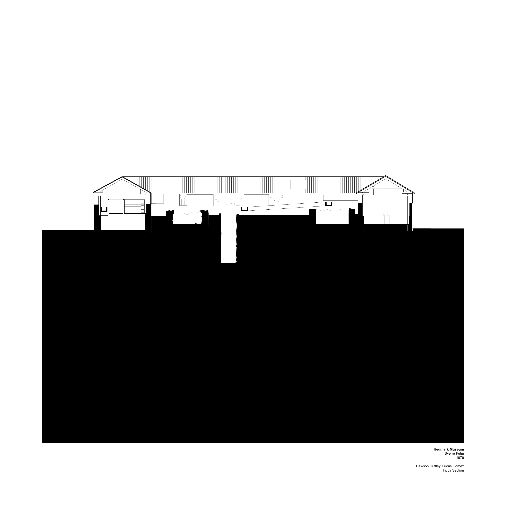
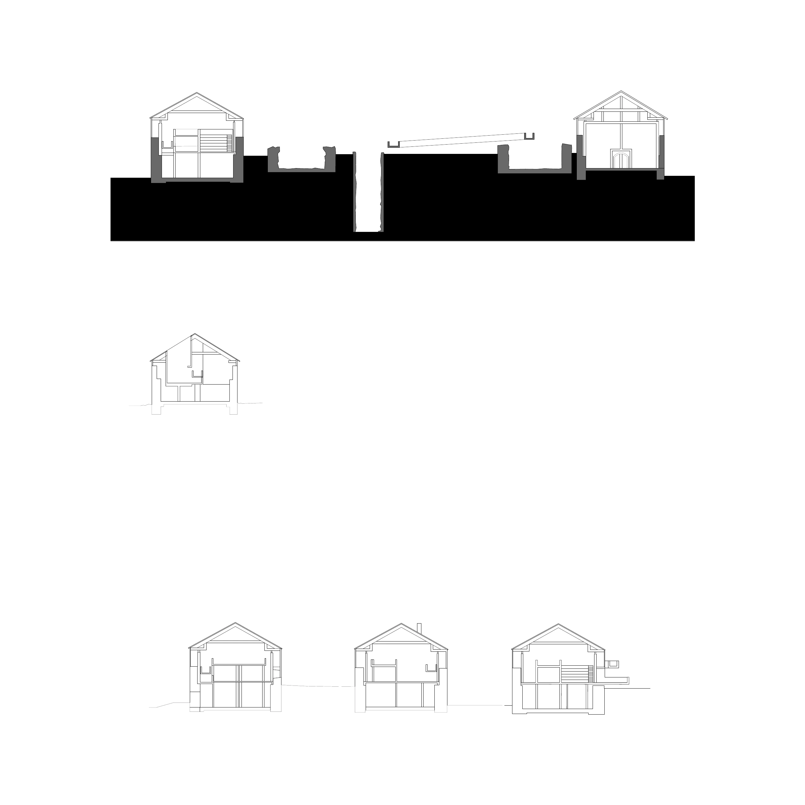
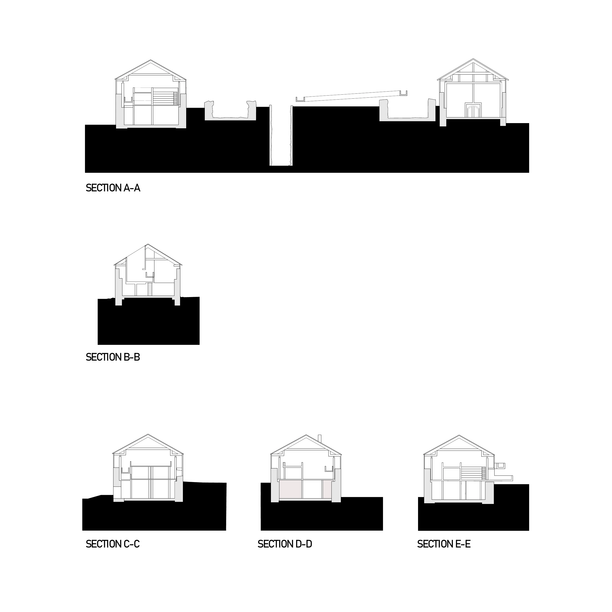
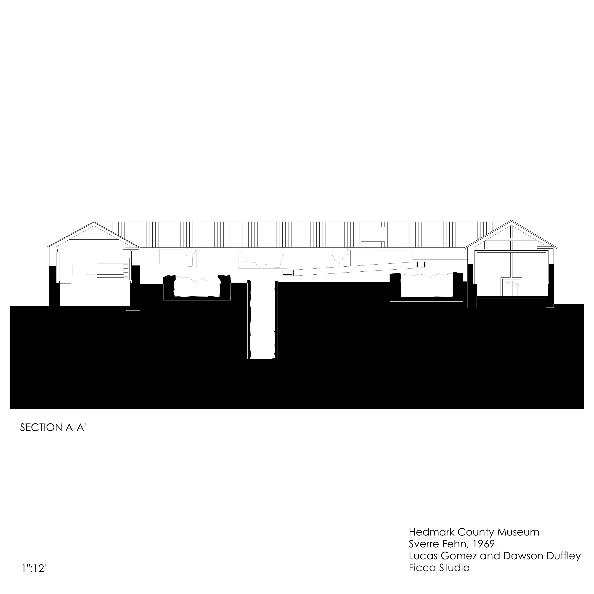
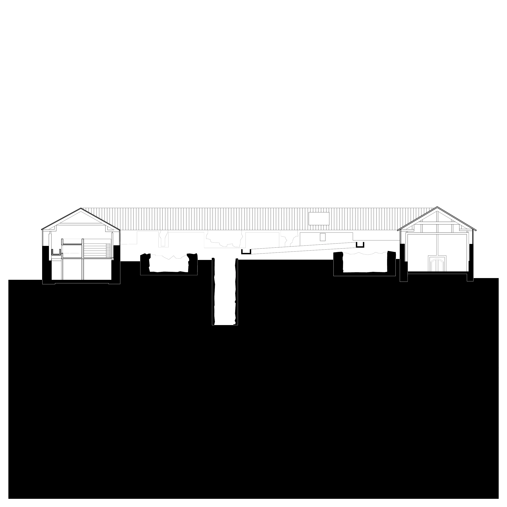
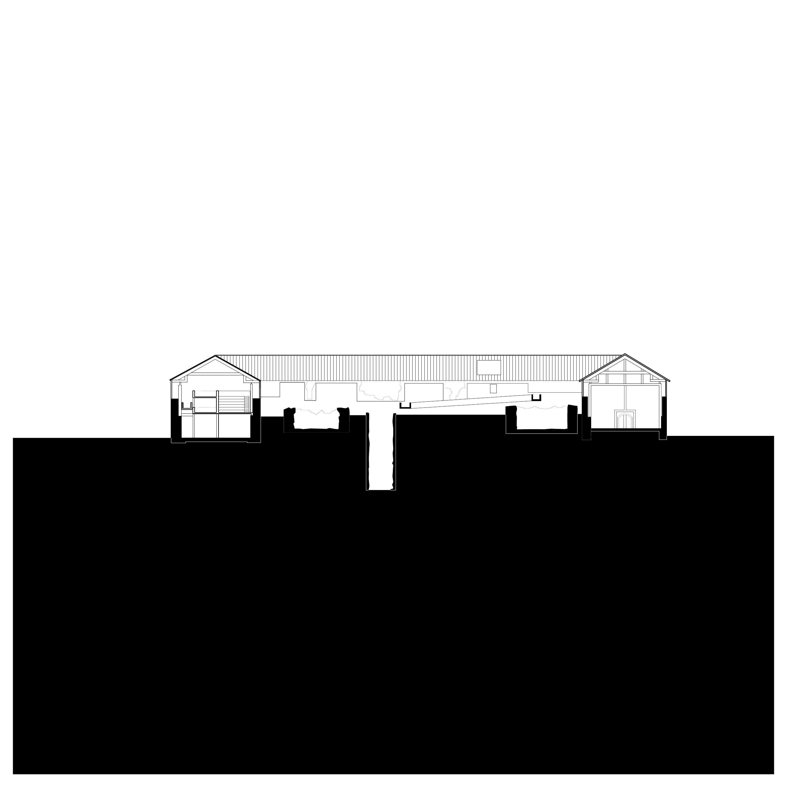
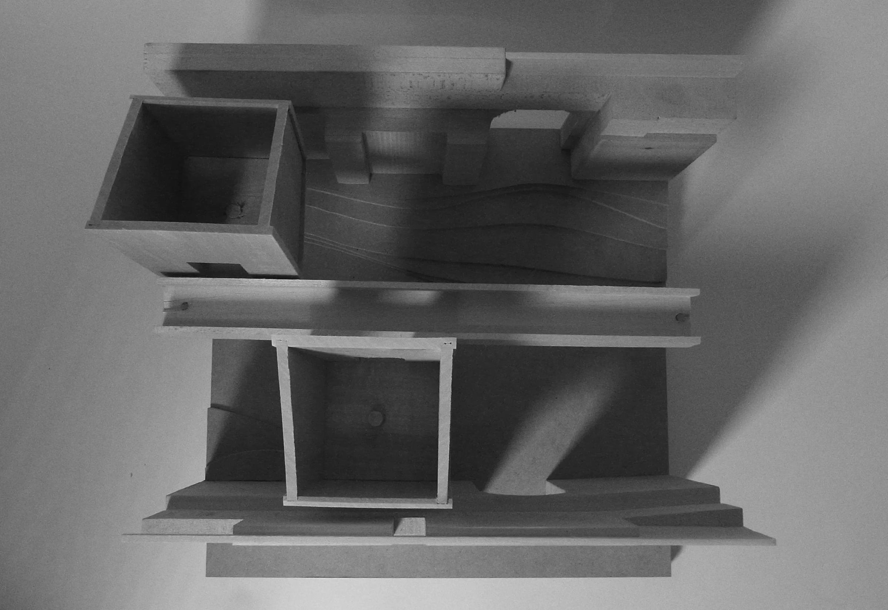

05 / Precedent / Adaptive reuse
Hedmark Museum
Hamar, Norway — Core 3 · Precedent analysis

Section and model analysis
A precedent analysis of Sverre Fehn’s Hedmark Museum, explored through a sectional drawing and physical models. The study examines how new architectural elements occupy and frame an existing historic structure.
Original architecture: Sverre Fehn. Academic analysis with Lucas Gomez. Section: Dawson Duffley. Axonometric and physical models: Lucas Gomez.







